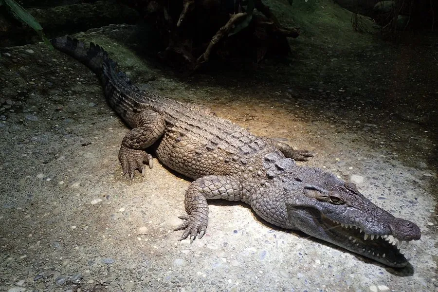

爬行动物 · 动物界
菲律宾鳄 Crocodylus mindorensis

菲律宾群岛特有的小型鳄类，吻宽、背甲厚重，因捕捞与栖息地破坏成为全球最濒危的鳄类之一，野生个体不足百条。
- 分类
- 门脊索动物门纲爬行纲目鳄目科鳄科属鳄属
- 栖息环境
- 淡水沼泽、湖泊、小型河流、湿地与水稻田附近的静水水域
- 地理分布
- 菲律宾吕宋、民都洛、萨马、内格罗斯等岛屿的零星湿地
- 保护级别
- IUCN 极危（CR）；CITES 附录Ⅰ
物种志
菲律宾鳄是体型较小的鳄类，成年全长一般 1.5–2.7 米，雄性略大，体重 15–90 千克。吻部较宽而短，背部鳞甲厚重，体色呈金褐至灰褐，幼体色深并带清晰的黑色横斑，成年后逐渐模糊；颈部与背部有明显的骨质突起。它的体型虽小，但性情并不温顺，护巢时会主动攻击。
它们仅分布于菲律宾群岛的淡水沼泽、湖泊、河流与湿地，偏好水流缓慢、植被茂密的小型水体。食性广泛，捕食鱼、蛙、龟、水鸟、蛇和小型哺乳动物。每年旱季筑巢，雌鳄用植物与泥土堆成巢丘，每窝 7–30 枚卵，孵化期约 70–85 天，母鳄会守在巢旁。二十世纪因皮革贸易和“害兽”清除遭大量捕杀，加上湿地开垦与渔网误捕，其野生种群一度不足百条，现依靠人工繁育与重引入维持。
形态与习性
- 全长约 1.5–2.7 m，雄性略大
- 体重约 15–90 kg
- 食性鱼、蛙、龟、水鸟、蛇与小型哺乳动物
- 繁殖旱季堆巢，每窝 7–30 枚卵，孵化约 70–85 天
- 护巢行为母鳄守巢，受干扰时会主动冲撞示威
- 种群现状野生成体估计不足 100 条，为全球最濒危鳄类之一
- 体型鳄科中体型较小的一种，成年多不足 2.5 m
趣味知识
- 菲律宾鳄体型不大，却是全球最濒危的鳄类之一，野外不足百条。
- 它偏爱安静的小型沼泽，而不是大江大河。
- 母鳄会在巢边守上两个多月，有人靠近就冲出来驱赶。